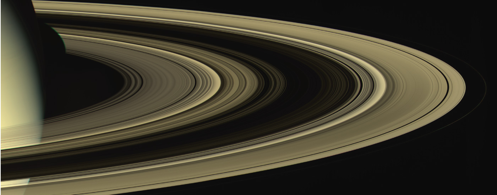

Introduction to Analytic Geometry

The Greek mathematician Menaechmus (c. 380–c. 320 BCE) is generally credited with discovering the shapes formed by the intersection of a plane and a right circular cone. Depending on how he tilted the plane when it intersected the cone, he formed different shapes at the intersection–beautiful shapes with near-perfect symmetry.
It was also said that Aristotle may have had an intuitive understanding of these shapes, as he observed the orbit of the planet to be circular. He presumed that the planets moved in circular orbits around Earth, and for nearly 2000 years this was the commonly held belief.
It was not until the Renaissance movement that Johannes Kepler noticed that the orbits of the planet were not circular in nature. His published law of planetary motion in the 1600s changed our view of the solar system forever. He claimed that the sun was at one end of the orbits, and the planets revolved around the sun in an oval-shaped path.
Other objects in the solar system (and perhaps other systems) follow a similar elliptical path, including the spectacular rings of Saturn. Using this understanding as a basis, 19th century mathematicians like James Clerk Maxwell and Sofya Kovalevskaya showed that despite their appearance through the telescopes of the day (and even in current telescopes), the rings are not solid and continuous, but are rather composed of small particles. Even after the Voyager and Cassini missions have provided close-up and detailed data regarding the ring structures, full understanding of their construction relies heavily on mathematical analysis. Of particular interest are the influences of Saturn's moons and moonlets, and the ways they both disrupt and preserve the ring structure.
In this chapter, we will investigate the two-dimensional figures that are formed when a right circular cone is intersected by a plane. We will begin by studying each of three figures created in this manner. We will develop defining equations for each figure and then learn how to use these equations to solve a variety of problems.